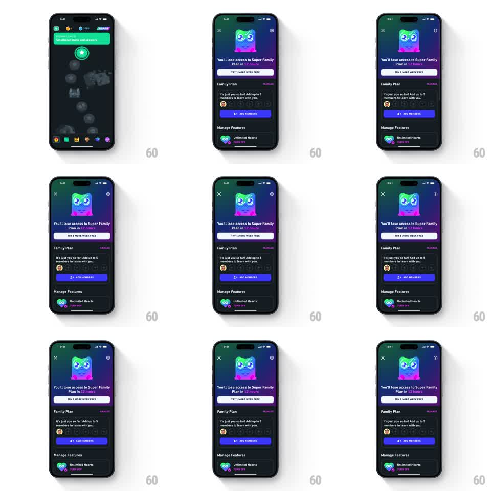

Media
Frame-by-frame

Rebuild this animation 1:1: Duolingo's subscription-expiry warning - a dark "lose access" sheet where the owl mascot sits in a glowing purple gradient frame crying on a loop, with tears welling and falling while the countdown copy and plan details stay static below.

Rebuild this animation 1:1: Duolingo's subscription-expiry warning - a dark "lose access" sheet where the owl mascot sits in a glowing purple gradient frame crying on a loop, with tears welling and falling while the countdown copy and plan details stay static below.
## Integration
Integration: stack-agnostic spec - springs given as stiffness/damping, timed motions as duration + curve; map every value to your framework and animation library of choice.
## Scene
Dark charcoal sheet over the dimmed home path. Close X top-left, settings gear top-right. Top third: a rounded-square canvas with a purple-violet radial glow where the Duolingo owl cries. Below: headline "You'll lose access to Super Family Plan in 13 hours" (countdown in red), a light "TRY 1 MORE WEEK FREE" pill button, then a Family Plan section (member avatar, add-member slots, purple ADD MEMBERS button) and a Manage Features list (Unlimited Hearts row). Only the mascot canvas animates.
## Motion spec
Pattern: looping emotional mascot idle.
- Entrance: the mascot canvas scales from 0.9 to 1.0 (spring ~300/20) as the sheet slides up (300ms ease-out).
- Cry loop (repeats every ~1.6s): the owl's eyes squeeze shut (lids scale down over 150ms), brows tilt up at the centers, then tears well up (two droplets scale 0 -> 1 at the eye corners, 300ms) and fall (translateY ~30pt with fade, 400ms, ease-in).
- Body subtly rises and falls with a sob (translateY +/-2pt, 800ms sine).
- The purple glow behind the owl pulses softly (opacity 0.7 -> 1.0 -> 0.7, 1.6s, in phase with the sob).
## Calibration
- The loop must read as continuous crying, not a one-shot tear - retime so a new tear wells as the previous one fades.
- All UI below the canvas is frozen; the emotion carries the screen.
## Reduced motion
Static sad-face mascot frame, no tear cycle, no glow pulse; sheet still slides up.
## Don't miss
- Tears fall from both eyes, offset by ~200ms so they do not mirror perfectly.
- The countdown figure ("13 hours") renders in red while the rest of the headline is white.